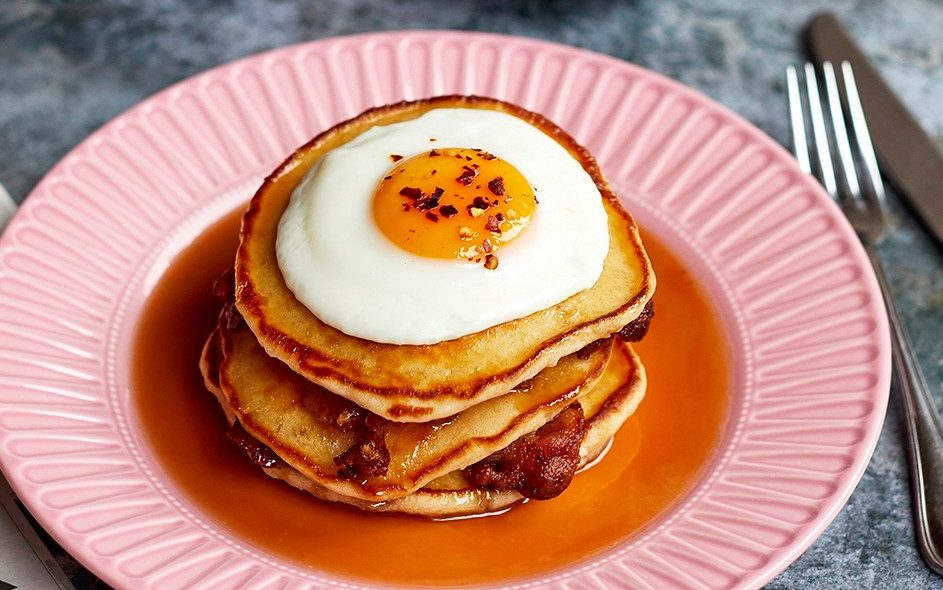

Pancakes and Eggs

Description
Pancakes and eggs is a classic American style breakfast.
One large blueberry pancake with 4 fried eggs for plenty of protein
to start your day right.
Ingredients
- Pancake mix
- Milk
- Eggs
- Butter
- Hot sauce
- Blueberries
- Maple syrup
Steps
- Mix 1/2 cup pancake batter with 3-4oz of milk and a handful of bluberries.
- Cook on medium-low over cooking spray, finished when both sides are golden brown.
- Coat the pan with butter and turn up to medium-high.
- Crack 4 eggs into the pan when the butter begins to bubble.
- Salt and pepper the eggs before flipping and finishing to your desired doneness.
- Serve pancake with maple syrup and eggs with hot sauce of your choice.